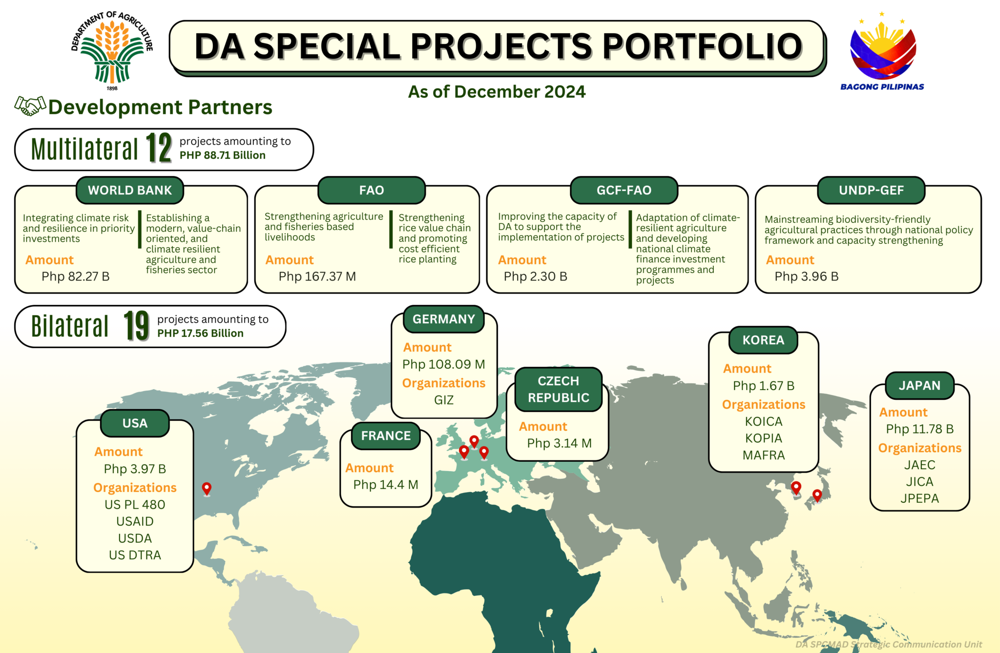
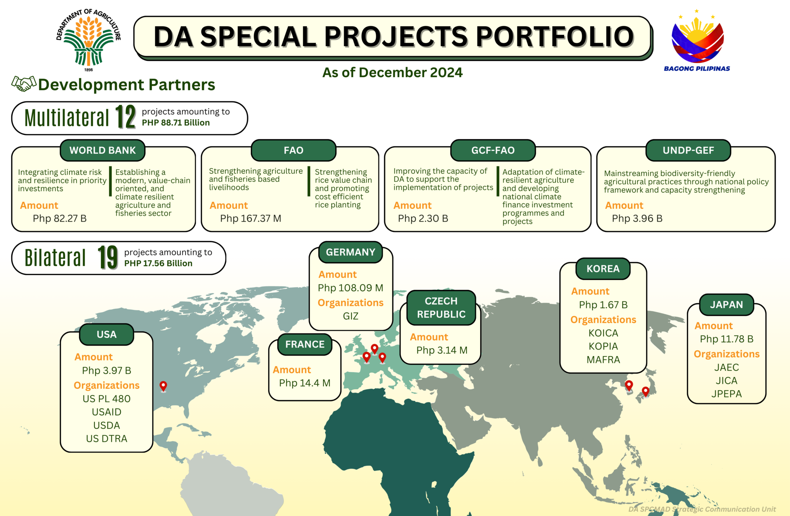

Services
Tulong at serbisyo, mula bukid hanggang bangka —
empowering rural communities every step of the way.
Explore Our Services!
Accreditation of Civil Society Organizations
The Department of Agriculture (DA) accredits Civil Society Organizations (CSOs) to ensure effective implementation of agriculture and fishery programs, promoting transparency and accountability, and enhancing citizen participation.
Accreditation, Licensing, Registration & Other Related Services
The Department of Agriculture (DA) provides accreditation, licensing, and registration services to support agricultural stakeholders, ensure compliance with national standards, and promote transparency, accountability, and active participation in agri-fishery programs.
Agribusiness and Marketing Assistance
The DA’s Agribusiness and Marketing Assistance Service (AMAS) connects farmers, fisherfolk, and agri-MSMEs to markets by providing timely market insights, promoting local products, and supporting agribusiness development. Through data, linkages, and investment promotion, AMAS helps strengthen agri-enterprises and expand their reach both locally and globally.
Agricultural Credit and Financing Programs
The DA offers accessible credit and loan programs designed to support farmers, fisherfolk, youth agripreneurs, and agrarian reform beneficiaries — helping them recover, grow their agribusinesses, and build financial resilience.
- Survival and Recovery (SURE) Assistance Program
- Kapital Access for Young Agripreneurs (KAYA)
- Agri-Negosyo Loan Program (ANYO)
- Accessible Loans for Empowered, Resilient, and Transformed Agrarian Reform Beneficiary Organizations (ALERT ARBOs) Program
Agriculture and Fisheries Information Services
The Department of Agriculture (DA) provides essential information and communication services to the public, ensuring the effective dissemination of agricultural and fisheries-related news, updates, and services. These efforts aim to support informed decision-making, strengthen connections with stakeholders, and improve public engagement in DA initiatives.
- Provides briefings and orientations on DA's programs and services
- Refers clients to the appropriate DA agency for specific requests
- Offers information, education, and communication (IEC) materials
- Handles requests aired through media channels (radio/TV) and letters
- Documents DA activities and releases news articles for media distribution
- Coordinates media interviews with DA officials
- Maintains an information board displaying monthly activities from DA agencies
Soils and Water Services
The Department of Agriculture (DA) offers comprehensive soil and water services aimed at enhancing agricultural productivity, ensuring sustainable land use, and supporting the conservation of natural resources. These services contribute to the effective management and development of soil and water resources for long-term agricultural growth.
- Conducts soil and land resources evaluation
- Provides technical evaluation on land use matters
- Assists in soil conservation farm planning and the establishment of soil-guided farms
- Implements rainwater harvesting facilities and small-scale irrigation infrastructures
- Manages cloud seeding operations to enhance water availability
- Offers multi-functional laboratory services for soil and water testing
- Supports research and development on soil and water resources
- Develops and manages soil and water information systems and databases
Special Projects Coordination & Management Assistance
The Department of Agriculture (DA) ensures the efficient implementation of Foreign-Assisted Projects (FAPs) and Locally-Funded Projects (LFPs), fostering seamless transitions from project preparation to implementation, and from completion to evaluation. In partnership with the Project Development Service (PDS), the DA institutionalizes systems that streamline project management processes. Additionally, the DA provides vital information and assistance regarding its various foreign-assisted and locally-funded projects to support stakeholders and ensure successful project outcomes.
Training and Extension Services
The Department of Agriculture (DA) offers a variety of training and extension services designed to enhance the skills and knowledge of individuals and organizations in the agriculture and fisheries sectors. These services aim to support the professional development of stakeholders, foster innovation, and promote sustainable agricultural practices.
- Scholarship Programs
- Extension Programs and Projects
- Training Services
- Agriculture and Fisheries Extension (AFE) Grants System
- e-Learning
 
